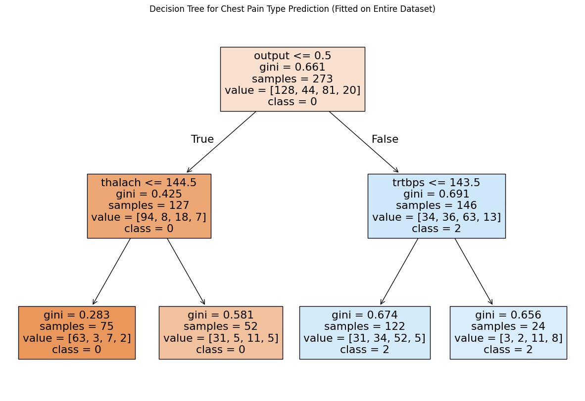

## library imports here
import pandas as pd
import numpy as np
from sklearn.pipeline import Pipeline
from sklearn.preprocessing import StandardScaler, OneHotEncoder, PolynomialFeatures, label_binarize, FunctionTransformer
from sklearn.linear_model import LinearRegression, LogisticRegression
from sklearn.model_selection import train_test_split, GridSearchCV
from sklearn.metrics import r2_score, mean_squared_error
from sklearn.pipeline import Pipeline
from sklearn.neighbors import KNeighborsRegressor, KNeighborsClassifier
from sklearn.tree import DecisionTreeRegressor, DecisionTreeClassifier
from sklearn.compose import make_column_selector, make_column_transformer, ColumnTransformer
from sklearn.model_selection import cross_val_score, cross_val_predict
from sklearn.metrics import confusion_matrix, ConfusionMatrixDisplay, accuracy_score, precision_score, recall_score, f1_score, roc_auc_score, classification_report, roc_curve, auc
import matplotlib.pyplot as plt
from sklearn.tree import plot_tree
from sklearn.discriminant_analysis import LinearDiscriminantAnalysisOur dataset consists of clinical data from patients who entered the hospital complaining of chest pain (“angina”) during exercise. The information collected includes:
age: Age of the patientsex: Sex of the patientcp: Chest Pain type- Value 0: asymptomatic
- Value 1: typical angina
- Value 2: atypical angina
- Value 3: non-anginal pain
trtbps: resting blood pressure (in mm Hg)chol: cholesterol in mg/dl fetched via BMI sensorrestecg: resting electrocardiographic results- Value 0: normal
- Value 1: having ST-T wave abnormality (T wave inversions and/or ST elevation or depression of > 0.05 mV)
- Value 2: showing probable or definite left ventricular hypertrophy by Estes’ criteria
thalach: maximum heart rate achieved during exerciseoutput: the doctor’s diagnosis of whether the patient is at risk for a heart attack- 0 = not at risk of heart attack
- 1 = at risk of heart attack
ha = pd.read_csv("https://www.dropbox.com/s/aohbr6yb9ifmc8w/heart_attack.csv?dl=1")Q1: Natural Multiclass Models
Fit a multiclass KNN, Decision Tree, and LDA for the heart disease data; this time predicting the type of chest pain (categories 0 - 3) that a patient experiences. For the decision tree, plot the fitted tree, and interpret the first couple splits.
X = ha.drop("cp", axis = 1)
y = ha["cp"]ct = ColumnTransformer(
[
("dummify",
OneHotEncoder(sparse_output = False, handle_unknown='ignore'),
make_column_selector(dtype_include=object)),
("standardize", StandardScaler(),
make_column_selector(dtype_include=np.number))
],
remainder = "passthrough"
)
knn = Pipeline(
[("preprocessing", ct),
("knn", KNeighborsClassifier())]
).set_output(transform="pandas")
# 1. Cross-Validation for KNN
#For KNN we definetely need to standardize!
knn_scores = cross_val_score(knn, X, y, cv=5, scoring='roc_auc_ovo').mean()
print(knn_scores)0.5775534607005195#Question: What do we put inside the decision tree function?
# Decision Tree
decision_tree = Pipeline((
[#("preprocessing", ct),
("tree", DecisionTreeClassifier(max_depth = 2))]
))
dt_scores = cross_val_score(decision_tree, X, y, cv=5, scoring='roc_auc_ovo').mean()
print(dt_scores)0.607999937154349# LDA
lda = Pipeline(
[("preprocessing", ct),
("lda", LinearDiscriminantAnalysis())]
).set_output(transform="pandas")
lda_scores = cross_val_score(lda, X, y, cv=5, scoring='roc_auc_ovo').mean()
print(lda_scores)0.6652907920646892# Fit the decision tree on the entire dataset for visualization
decision_tree.fit(X, y)
# Access the fitted DecisionTreeClassifier
tree_model = decision_tree.named_steps['tree']
plt.figure(figsize=(15, 10))
plot_tree(tree_model, feature_names=X.columns, class_names=["0", "1", "2", "3"], filled=True) # Use tree_model here
plt.title("Decision Tree for Chest Pain Type Prediction (Fitted on Entire Dataset)")
plt.show()
Interpret the first couple splits: The decision tree begins by splitting on output <= 0.5, dividing the 273 samples into two branches. The left branch, where output <= 0.5 is true, contains 127 samples with a Gini index of 0.425 and is dominated by Class 0 (94 samples). This branch further splits on thalach <= 144.5, creating two nodes: the left child has 75 samples (majority Class 0, Gini = 0.283), while the right child has 52 samples (still majority Class 0 but with more impurity, Gini = 0.581). The right branch of the root node, where output > 0.5, contains 146 samples with a higher Gini index of 0.691 and is dominated by Class 2 (63 samples). This branch splits on trtbps <= 143.5, producing two child nodes: the left child has 122 samples (majority Class 2, Gini = 0.674), and the right child has 24 samples (majority Class 2, Gini = 0.656). Each split reduces impurity and refines the predictions for the majority class.
Q2: OvR
Create a new column in the ha dataset called cp_is_3, which is equal to 1 if the cp variable is equal to 3 and 0 otherwise.
Then, fit a Logistic Regression to predict this new target, and report the F1 Score.
Repeat for the other three cp categories. Which category was the OvR approach best at distinguishing?
#Question: Do we need to dummify or standardize anymore?
#New column
ha["cp_is_3"] = ha['cp'] == 3
ha["cp_is_3"] = ha["cp_is_3"].astype(int)
X = ha.drop(columns=["cp_is_3", "cp"])
y = ha["cp_is_3"]
#Question: What goes inside the logistic regression function?
#Fit a logistic regression
ct = ColumnTransformer(
[
("dummify",
OneHotEncoder(sparse_output = False, handle_unknown='ignore'),
make_column_selector(dtype_include=object)),
("standardize", StandardScaler(),
make_column_selector(dtype_include=np.number))
],
remainder = "passthrough"
)
logreg_pipeline1 = Pipeline(
[("preprocessing", ct),
("logreg", LogisticRegression(max_iter=1000))]
).set_output(transform="pandas")
#f1 score???
y_pred = cross_val_predict(logreg_pipeline1, X, y, cv=5)
f1_cp3 = f1_score(y, y_pred)
print("cp3:",f1_cp3)
#repeat for the other three cp categories
#When cp is 0
ha["cp_is_0"] = ha['cp'] == 0
ha["cp_is_0"] = ha["cp_is_0"].astype(int)
X = ha.drop(columns=["cp_is_0", "cp_is_3", "cp"])
y = ha["cp_is_0"]
y_pred = cross_val_predict(logreg_pipeline1, X, y, cv=5)
f1_cp0 = f1_score(y, y_pred)
print("cp0:", f1_cp0)
#When cp is 1
ha["cp_is_1"] = ha['cp'] == 1
ha["cp_is_1"] = ha["cp_is_1"].astype(int)
X = ha.drop(columns=["cp_is_1", "cp_is_0", "cp_is_3", "cp"])
y = ha["cp_is_1"]
y_pred = cross_val_predict(logreg_pipeline1, X, y, cv=5)
f1_cp1 = f1_score(y, y_pred)
print("cp1:",f1_cp1)
#When cp is 2
ha["cp_is_2"] = ha['cp'] == 2
ha["cp_is_2"] = ha["cp_is_2"].astype(int)
X = ha.drop(columns=["cp_is_2", "cp_is_1", "cp_is_0", "cp_is_3", "cp"])
y = ha["cp_is_2"]
y_pred = cross_val_predict(logreg_pipeline1, X, y, cv=5)
f1_cp2 = f1_score(y, y_pred)
print("cp2:",f1_cp2)cp3: 0.0
cp0: 0.7159533073929961
cp1: 0.0
cp2: 0.2127659574468085OvR was best at distinguishing between a chest pain score of 3 or not a score of 3 as it had the highest F1 score.
Q3: OvO
Reduce your dataset to only the 0 and 1 types of chest pain.
Then, fit a Logistic Regression to predict between the two groups, and report the ROC-AUC.
Repeat comparing category 0 to 2 and 3. Which pair was the OvO approach best at distinguishing?
#Reduce dataset to only the 0 and 1 types of chest pain
filtered_ha = ha[ha['cp'].isin([0, 1])]
filtered_ha.head()
X = filtered_ha.drop(columns=["cp", 'cp_is_3', 'cp_is_0', 'cp_is_1', "cp_is_2"])
y = filtered_ha["cp"]
#Fit a logistic regression
ct = ColumnTransformer(
[
("dummify",
OneHotEncoder(sparse_output = False, handle_unknown='ignore'),
make_column_selector(dtype_include=object)),
("standardize", StandardScaler(),
make_column_selector(dtype_include=np.number))
],
remainder = "passthrough"
)
logreg_pipeline1 = Pipeline(
[("preprocessing", ct),
("logreg", LogisticRegression(max_iter=1000))]
).set_output(transform="pandas")
logreg_score = cross_val_score(logreg_pipeline1, X, y, cv=5, scoring='roc_auc').mean()
print(logreg_score)0.8376709401709401#Reduce dataset to only the 0 and 2 types of chest pain
filtered_ha = ha[ha['cp'].isin([0, 2])]
filtered_ha.head()
X = filtered_ha.drop(columns=["cp", 'cp_is_3', 'cp_is_0', 'cp_is_1', "cp_is_2"])
y = filtered_ha["cp"]
#Fit a logistic regression
ct = ColumnTransformer(
[
("dummify",
OneHotEncoder(sparse_output = False, handle_unknown='ignore'),
make_column_selector(dtype_include=object)),
("standardize", StandardScaler(),
make_column_selector(dtype_include=np.number))
],
remainder = "passthrough"
)
logreg_pipeline1 = Pipeline(
[("preprocessing", ct),
("logreg", LogisticRegression(max_iter=1000))]
).set_output(transform="pandas")
logreg_score = cross_val_score(logreg_pipeline1, X, y, cv=5, scoring='roc_auc').mean()
print(logreg_score)0.7511029411764706#Reduce dataset to only the 0 and 3 types of chest pain
filtered_ha = ha[ha['cp'].isin([0, 3])]
filtered_ha.head()
X = filtered_ha.drop(columns=["cp", 'cp_is_3', 'cp_is_0', 'cp_is_1', "cp_is_2"])
y = filtered_ha["cp"]
#Fit a logistic regression
ct = ColumnTransformer(
[
("dummify",
OneHotEncoder(sparse_output = False, handle_unknown='ignore'),
make_column_selector(dtype_include=object)),
("standardize", StandardScaler(),
make_column_selector(dtype_include=np.number))
],
remainder = "passthrough"
)
logreg_pipeline1 = Pipeline(
[("preprocessing", ct),
("logreg", LogisticRegression(max_iter=1000))]
).set_output(transform="pandas")
logreg_score = cross_val_score(logreg_pipeline1, X, y, cv=5, scoring='roc_auc').mean()
print(logreg_score)0.7412307692307692The OvO score was best at predicting between a chest pain of 0 and 1 as it had the highest roc auc score.
F1 score says am I good at finding the target category? Roc Auc says how confident am I at distinguishing two things (chest pain of 1 from chest pain of 0)